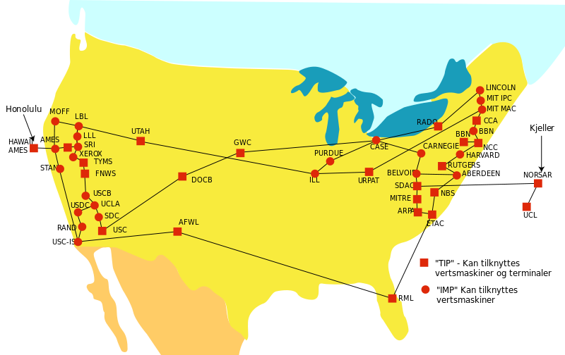

Email y Usenet: El crecimiento de los foros de texto
Se suele considerar el correo electrónico como la aplicación asesina de Internet; aunque realmente, el e-mail ya existía antes de Internet y fue una herramienta crucial en su creación. Empezó en 1965 como una aplicación de ordenadores centrales a tiempo compartido para que múltiples usuarios pudieran comunicarse. Aunque la historia no es clara, entre los primeros sistemas en tener una facilidad así se encuentran Q32, de SDC's, y CTSS del MIT.
La red de computadoras de ARPANET hizo una gran contribución en la evolución del correo electrónico. Existe un informe que indica transferencias de e-mail entre sistemas experimentales poco después de su creación. Ray Tomlinson inició el uso del signo @ para separar los nombres del usuario y su máquina, en 1971.
Se desarrollaron protocolos para transmitir el correo electrónico entre grupos de ordenadores centrales a tiempo compartido sobre otros sistemas de transmisión, como UUCP y el sistema de e-mail VNET, de IBM. El correo electrónico podía pasarse así entre un gran número de redes, incluyendo ARPANET, BITNET y NSFNET, así como a hosts conectados directamente a otros sitios vía UUCP.
Además, UUCPnet trajo una manera de publicar archivos de texto que se pudieran leer por varios otros. El software News, desarrollado por Steve Daniels y Tom Truscott en 1979 se usarían para distribuir noticias mensajes como tablones de anuncios. Esto evolucionó rápidamente a los grupos de discusión con un gran rango de contenidos. En ARPANET y NSFNET, concretamente en la lista de correo de sflovers se crearon grupos de discusión similares por medio de listas de correo, que discutían asuntos técnicos y otros temas, como la ciencia ficción.
